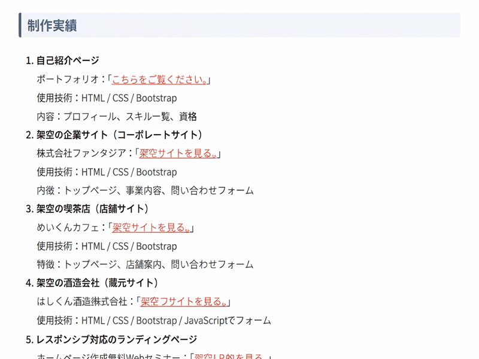
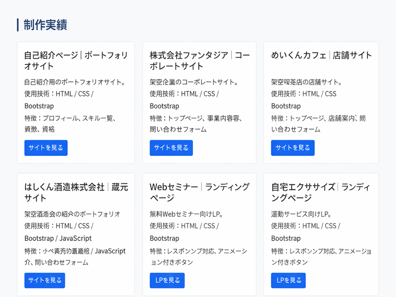

はじめに
ポートフォリオページは、自分のスキルや実績を伝える大切な場所です。
しかし、情報をただ縦に並べただけでは、どうしても「読みにくい」「伝わりにくい」ページになりがちです。
今回、私のポートフォリオページもまさにその状態でした。
- 制作実績が箇条書きで縦にズラッと並んでいる
- 情報量が多く、どこに何があるか分かりづらい
- スマホではさらに読みづらい
そこで、 Bootstrap の Grid システムを使って、制作実績をカード型レイアウトに刷新したところ、
見た目も使いやすさも劇的に改善しました。
この記事では、改善前 → 改善後の比較と、実際に使った Grid のコード例を紹介します。
改善前：縦に長い箇条書きで読みづらい構成
以前の制作実績は、以下のように `<ol>` の箇条書きで並んでいました。
- 情報量が多くて縦に長い
- 各項目の構造がバラバラ
- スマホでは特に読みづらい

▲ 改善前：情報が縦に並んで読みづらい構成
改善後：Grid＋カード型で一覧性が大幅に向上
Bootstrap の Grid システムを使い、制作実績を 1 → 2 → 3 列に自動切り替えされるカード型に変更しました。
- PC：3列
- タブレット：2列
- スマホ：1列
カードの高さも揃い、タイトル・説明・使用技術・ボタンの構造を統一したことで、
プロのポートフォリオのような統一感が生まれました。

▲ 改善後：カード型レイアウトで一覧性が大幅に向上
実際に使った Grid のコード
今回の改善で使ったのは、Bootstrap の以下のクラスです。
- `row row-cols-1 row-cols-md-2 row-cols-lg-3 g-4`
- `col`
- `card h-100`
これだけで、レスポンシブ対応のカードレイアウトが簡単に作れます。
以下は実際に使用したコードの一部です。
<div class="row row-cols-1 row-cols-md-2 row-cols-lg-3 g-4">
<div class="col">
<div class="card h-100">
<div class="card-body">
<h5 class="card-title">株式会社ファンタジア｜コーポレートサイト</h5>
<p class="card-text">
架空企業のコーポレートサイト。<br>
使用技術：HTML / CSS / Bootstrap<br>
特徴：トップページ、事業内容、問い合わせフォーム
</p>
<a href="corporate000.html" class="btn btn-primary btn-sm">サイトを見る</a>
</div>
</div>
</div>
</div>
Grid 化で得られたメリット
今回の改善で感じたメリットは以下の通りです。
- 一覧性が大幅に向上
- カードの高さが揃い、見た目が美しい
- スマホでも読みやすいレイアウトに
- 情報の構造が統一され、伝わりやすくなった
- Bootstrap の Grid はコードがシンプルで扱いやすい
特に、「カードの高さが揃う」というのは視覚的な印象に大きく影響します。
まとめ
今回、ポートフォリオの制作実績を Bootstrap の Grid システム＋カード型レイアウトに変更したことで、
ページ全体の見やすさと統一感が大きく向上しました。
Grid は難しそうに見えて、実際は数行のクラスを追加するだけでレスポンシブ対応の美しいレイアウトが作れます。
ポートフォリオを改善したい方には、まず制作実績の Grid 化を強くおすすめします。
次回は、スキルセットやプロフィール部分のレイアウト改善にも取り組んでいきたいと思います。